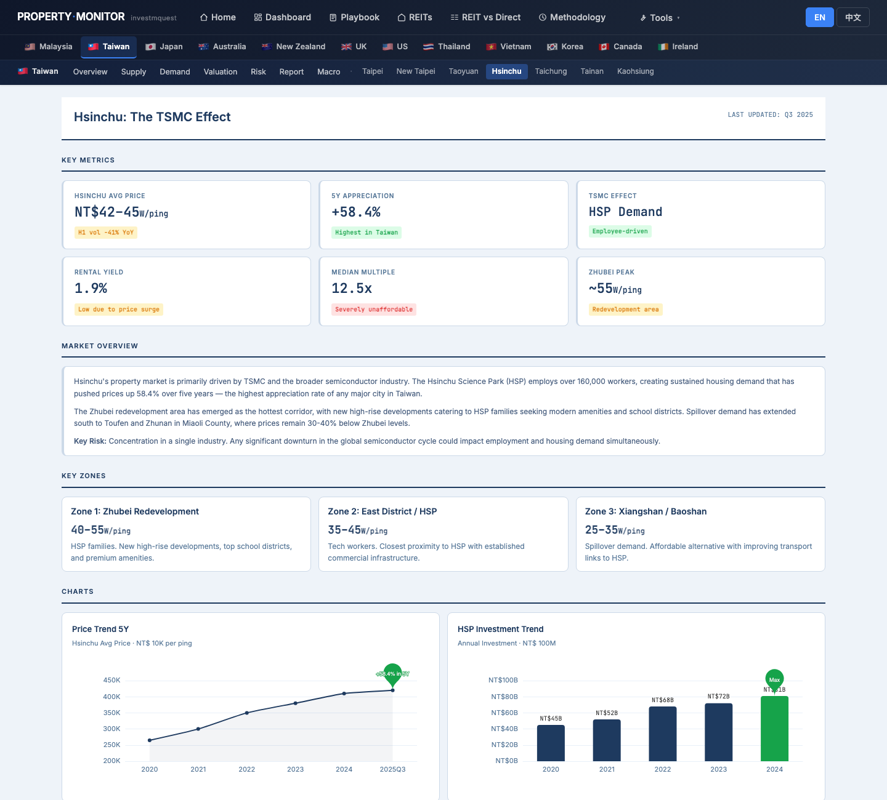
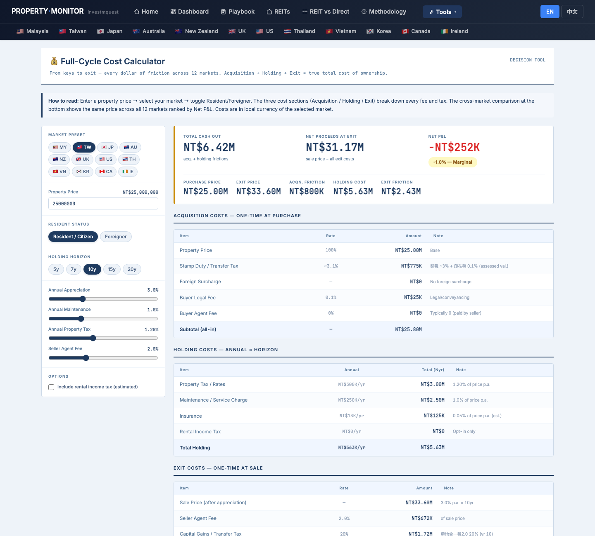
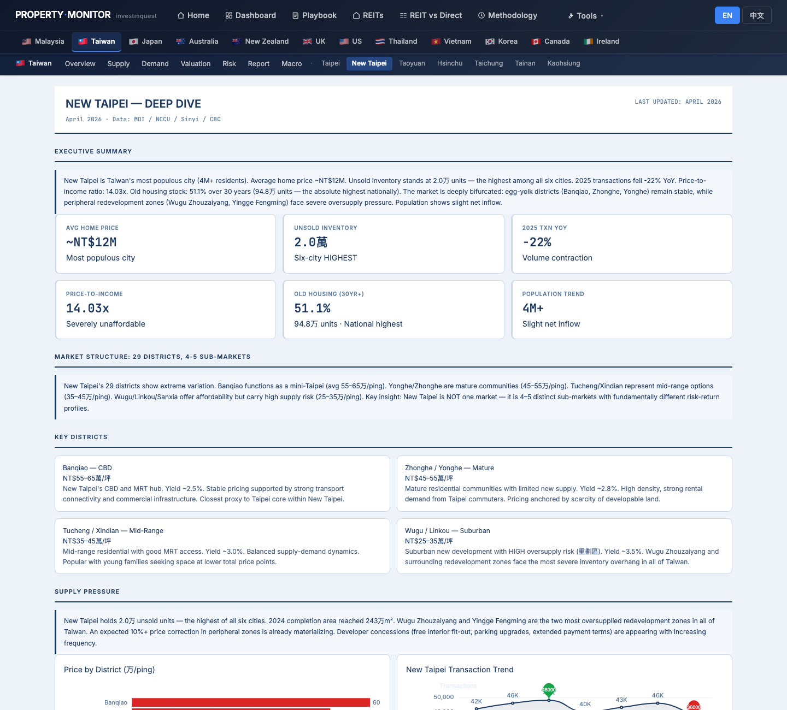
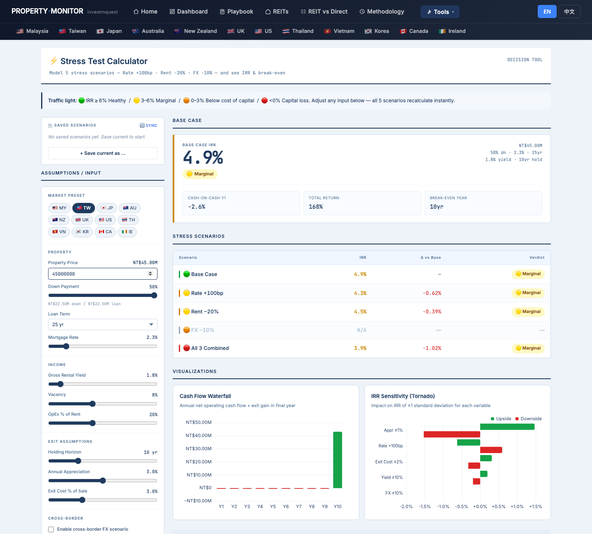
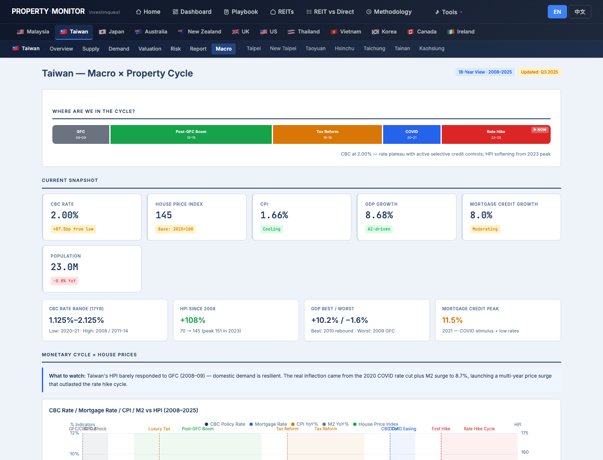

Mr. Chen (45, Hsinchu, TSMC senior engineer) bought his 3-bed Hsinchu condo in 2015 for NT$12M — it is now worth roughly NT$25M. Two kids (ages 10 & 12) are outgrowing the unit and need a better Taipei school district. His plan: sell Hsinchu (remaining mortgage ~NT$5M, so net equity ~NT$20M cash) then buy a 4-bed Taipei unit around NT$45M, taking a new mortgage of ~NT$25M. He is both a seller and a buyer — the only persona on this site doing a full two-step transaction. This walkthrough shows him exactly which page to open, what to click, and how each tool relates to his specific trade-up situation. It is not investment advice, tax advice, or property recommendations. 陳先生，45歲，新竹台積電資深工程師，2015年以NT$1,200萬買入新竹3房，現值約NT$2,500萬。兩個孩子（10歲、12歲）已漸漸嫌小，他們想要更好的台北學區和更大的空間。計畫：賣掉新竹（剩餘房貸約NT$500萬，淨權益約NT$2,000萬現金）後，購入台北4房約NT$4,500萬，需新貸款約NT$2,500萬。他是賣家也是買家，本站唯一進行完整兩步驟交易的使用者。本導覽示範他該先打開哪頁、點什麼、每個工具如何對應他的換屋情境。本文不是投資建議、稅務建議或不動產推薦。
- Where do I check if Hsinchu has peaked — is now a good time to sell?去哪裡確認新竹是否已到頂，現在是好的出售時機嗎？
- Where do I compare Taipei vs New Taipei for the upgrade target?去哪裡比較台北和新北，作為換屋目標的選擇？
- What does my Hsinchu sale net me after 房地合一稅 and agent fees — 10-year self-occupied bracket?新竹賣掉後扣除房地合一稅和仲介費，我能拿到多少？（自住10年稅率區間）
- What does my Taipei purchase actually cost me end-to-end (acquisition costs + holding costs)?台北的購入實際上從頭到尾要花多少錢（取得成本＋持有成本）？
- Can I handle the new ~NT$25M mortgage if CBC raises rates?如果央行升息，我能承受新的約NT$2,500萬房貸嗎？
- What is the LTV trap if I buy Taipei before selling Hsinchu — the 2nd-home rules?如果在賣掉新竹前先買台北，「第二戶」規定的成數陷阱是什麼？
- How do I switch the site to 中文? Where do I download a PDF?怎麼切換到中文？怎麼下載 PDF？
Mr. Chen's click-by-click tour — 12 stops across 4 phases陳先生的逐步點擊旅程 — 4個階段共12個停靠點
Phase A (should I trade up at all?) → Phase B (sell-side: Hsinchu exit) → Phase C (buy-side: Taipei target) → Phase D (risks specific to trade-up). Every URL is a real page — open in another tab and follow along. Phase A（該不該換屋？）→ Phase B（賣方：新竹出場）→ Phase C（買方：台北目標）→ Phase D（換屋特有風險）。每個網址都是真實頁面，建議另開分頁跟著走。
Home page — pick the "I want growth" persona to orient the site toward capital appreciation首頁 — 選「我要增值」persona，讓網站導向資本增值框架
What he sees: the "I want growth" card activates amber. The scatter chart below reweights toward cities with strong 10-year appreciation histories — Taiwan cities (especially Taipei and Hsinchu) appear prominently in the growth-weighted view, validating both his existing asset and his target city. 螢幕出現什麼：「我要增值」卡變琥珀色亮起。下方的散點圖重新排序，凸顯10年漲幅強勁的城市 — 台灣城市（尤其台北和新竹）在增值視角下顯眼排前，同時印證他的現有資產和目標城市。

Taiwan long-form report — gauge the cycle: am I selling at a peak AND buying at a peak?台灣長篇報告 — 判斷市場週期：我是在高點賣、也在高點買嗎？
What he sees: the report has named sections — Executive Summary, Policy Impact (CBC 7th wave credit controls), Supply, Demand, Valuation, City chapters. The Valuation section compares PIR trends across cities; the Hsinchu chapter discusses TSMC-driven premium and whether the appreciation wave has plateaued; the Taipei chapter discusses district-level pricing and relative affordability. The demand section notes structural demand (upgraders, school-district driven) remains even as speculative demand has been structurally removed by 房地合一稅 2.0. 螢幕出現什麼：報告有多個章節 — 執行摘要、政策衝擊（央行第七波信用管制）、供給、需求、估值、城市章節。估值章節比較各城市的房價所得比趨勢；新竹章節討論台積電溢價是否已趨緩；台北章節討論行政區層級的房價和相對負擔能力。需求章節指出，在房地合一稅2.0結構性消除投機需求後，換屋和學區需求等結構性需求仍然持續。

Hsinchu city page — read the current market for his unit: price index, TSMC demand signal, supply新竹城市頁 — 了解他的物件目前市況：房價指數、台積電需求訊號、供給
What he sees:
▸ KEY METRICS — Hsinchu Avg Price, 5Y Appreciation, TSMC Effect KPI, Rental Yield, Median Multiple, Zhubei Peak indicator. The 5Y Appreciation figure tells him how much of his NT$13M gain is driven by structural demand vs rate cycle.
▸ KEY ZONES — Zhubei (closest to HSP, highest per-ping), Hsinchu City (mid-tier), Hsinchu County (suburban). His 2015 purchase in a TSMC-adjacent zone likely falls in the Zhubei or Hsinchu City tier.
▸ HSP Investment Trend chart — is TSMC capex still accelerating? A plateau or decline in HSP investment is a leading signal that the TSMC demand wave that drove Hsinchu prices may be maturing — a seller's timing cue.
螢幕出現什麼：
▸ KEY METRICS — 新竹均價、5年漲幅、台積電效應 KPI、租金收益率、房價所得比、竹北高點。5年漲幅數字能讓他判斷NT$1,300萬的獲利有多少來自結構性需求、有多少來自利率週期。
▸ KEY ZONES — 竹北（最近竹科、每坪最高）、新竹市（中階）、新竹縣（郊區）。他2015年在台積電周邊購入，很可能落在竹北或新竹市層級。
▸ 竹科投資趨勢圖 — 台積電資本支出是否仍在加速？竹科投資趨緩或下滑，是帶動新竹漲價的台積電需求浪可能趨於成熟的領先訊號 — 是賣方的時機線索。

Cost Calculator — Hsinchu exit: 房地合一稅 bracket for 10-year self-occupied holder, plus seller agent fee成本計算機 — 新竹出場：10年自住持有人的房地合一稅稅率，加上賣方仲介費
What he sees — the 房地合一稅 cliff explained in the Exit table:
The Exit table shows CGT brackets by hold duration. For a 10-year self-occupied holder, Mr. Chen is in the most favorable tax bracket — the tool shows the applicable rate for long self-occupied hold vs the sharp cliff at shorter durations:
▸ <2yr hold: 45% CGT on gain
▸ 2–5yr hold: 35% CGT on gain
▸ >5yr self-occupied: lower bracket (the specific rate the tool shows for his inputs)
The calculator also shows seller agent fee (typically ~2% of transaction price) and any other exit costs. The hero KPI "NET PROCEEDS AT EXIT" shows his estimated take-home after all exit costs are applied to the NT$25M sale price.
螢幕出現什麼 — Exit 表說明房地合一稅斷崖：
Exit 表依持有期間顯示 CGT 稅率級距。對於自住持有10年的陳先生，他落在最優惠的稅率區間 — 工具顯示長期自住持有適用的稅率，同時對比較短持有期的明顯斷崖：
▸ 持有未滿2年：獲利的45% CGT
▸ 持有2–5年：獲利的35% CGT
▸ 自住持有超過5年：較低級距（工具依他的輸入條件顯示適用稅率）
計算機也顯示賣方仲介費（通常約為成交價2%）及其他退出成本。最上方「NET PROCEEDS AT EXIT」的 KPI 數字，是扣除所有退出成本後，他從NT$2,500萬出售能拿到手的估算金額。

Valuation page — is Hsinchu peak-valued? P/R ratio and Mortgage Burden Rate signal seller's advantage估值頁 — 新竹估值是否已到頂？P/R 比和房貸負擔率傳遞賣方優勢訊號
What he sees:
▸ PIR by City chart — price-to-income ratio across TW cities. A high and rising PIR for Hsinchu = buyers are stretched = potential demand softening = seller's window. If Hsinchu's PIR is at multi-year highs vs Taipei, the relative valuation premium may be historically elevated.
▸ Mortgage Burden Rate by City chart — % of household income going to mortgage. High burden rate = buyers will resist further price increases = demand ceiling. Selling at high burden rate is timing the top of the affordability constraint.
▸ Yield Spread vs CBC KPI — if rental yield is below CBC policy rate, the marginal investor is underwater on new purchases, removing a buyer segment from the market — another seller signal.
螢幕出現什麼：
▸ 各城市 PIR 圖 — 台灣各城市房價所得比。新竹 PIR 高且持續上升 = 買方負擔拉緊 = 需求可能軟化 = 賣方視窗。若新竹 PIR 相對台北處於多年高位，這個相對估值溢價可能已達歷史高點。
▸ 各城市房貸負擔率圖 — 家庭收入用於房貸的比例。負擔率高 = 買方會抵制繼續漲價 = 需求天花板。在高負擔率時出售，等於在負擔能力限制的頂點布局。
▸ 利差 vs 央行利率 KPI — 若租金收益率低於央行政策利率，邊際投資者在新購時財務倒掛，一個買方群體退場 — 又一個賣方訊號。

Taipei city page — market overview, district price ranges, where does NT$45M land?台北城市頁 — 市場總覽、行政區價格區間，NT$4,500萬能買到什麼？
What he sees:
▸ KEY METRICS — Taipei presale avg price, HPI, rent index contextualize the NT$45M budget. A 4-bed in Taipei at NT$45M implies a specific per-ping price — the KEY METRICS tell him if this budget is mid-market, premium, or entry-level for different districts.
▸ District Price Map — 2026 Q1 price per ping across all Taipei admin districts (Da'an, Xinyi, Songshan, Zhongshan, etc.). This is the most direct budget-to-district mapping tool on the page — a NT$45M 4-bed translates to roughly 40–55 ping at various price-per-ping levels, and the map shows which districts that buys into.
▸ Supply charts — New Launches vs Transactions and presale contraction data show whether near-term supply will support or soften his purchase price.
螢幕出現什麼：
▸ KEY METRICS — 台北預售屋均價、HPI、租金指數，為NT$4,500萬預算提供背景脈絡。台北NT$4,500萬的4房，意味著特定的每坪單價 — KEY METRICS讓他知道這個預算在各區屬於中段市場、高端還是入門。
▸ 行政區房價地圖 — 2026 Q1 台北各行政區每坪均價（大安、信義、松山、中山等）。這是頁面上最直接的預算對應工具 — NT$4,500萬的4房大約是40–55坪，按各區每坪單價換算，地圖直接顯示這個預算能落在哪些行政區。
▸ 供給圖表 — 新推案 vs 成交量及預售市場收縮數據，顯示近期供給是否能支撐或軟化他的買入價。

New Taipei city page — triage Taipei vs New Taipei: lower price, MRT access, also good schools新北城市頁 — 台北 vs 新北比較：更低單價、捷運可達、學區也不差
What the side-by-side shows:
▸ Taipei vs New Taipei avg price per ping — the differential shows the "discount" for crossing the Xindian/Danshui/Banqiao border. For a 4-bed at a similar size, the same NT$45M buys meaningfully more space in certain New Taipei MRT districts (Banqiao, Zhonghe, Yonghe) vs core Taipei.
▸ New Taipei KEY ZONES — MRT-adjacent zones with school infrastructure: Banqiao / Yonghe / Zhonghe / Xinzhuang all have direct Taipei MRT lines and established school ecosystems. Tamsui has newer supply but longer commute.
▸ 5Y appreciation comparison — has New Taipei kept pace with Taipei over 5 years? If appreciation rates are similar, New Taipei offers better value per ping with comparable capital preservation.
並排比較顯示什麼：
▸ 台北 vs 新北每坪均價 — 差距顯示越過新店／淡水／板橋邊界的「折扣」幅度。同樣NT$4,500萬，在捷運直達的新北行政區（板橋、中和、永和），能買到比台北核心區明顯更大的坪數。
▸ 新北 KEY ZONES — 有學校基礎設施的捷運周邊區域：板橋／永和／中和／新莊都有直接通往台北的捷運線，學校生態健全。淡水有較新的供給但通勤較遠。
▸ 5年漲幅比較 — 新北過去5年是否跟上台北的漲幅腳步？若漲幅相近，新北在每坪價值更佳的同時提供相近的資本保值能力。

Cost Calculator — Taipei acquisition: what does NT$45M actually cost to buy and hold for 10 years?成本計算機 — 台北購入：NT$4,500萬持有10年的實際總成本是多少？
What he sees — NT$45M acquisition cost breakdown:
① Acquisition table — 契稅 (deed tax, ~3% of assessed value), registration fees, buyer agent fee (~2% of transaction price), legal / documentation costs. No foreign surcharge (he's a TW citizen). On a NT$45M property, the acquisition transaction costs shown give him the cash-on-top-of-purchase-price he needs to budget before touching the mortgage.
② Holding table — annual 房屋稅 (house tax on assessed value for primary residence), 地價稅 (land value tax), maintenance estimate, insurance — accumulated over 10 years. For a larger Taipei unit, these are meaningfully higher than his Hsinchu condo.
③ Hero KPI: TOTAL CASH OUT — acquisition + 10-year holding costs combined, before mortgage interest (which the stress test tool handles separately).
螢幕出現什麼 — NT$4,500萬取得成本明細：
① Acquisition 表 — 契稅（約為公告現值3%）、登記費、買方仲介費（約為成交價2%）、法律/文件費用。無外國人附加稅（他是台灣公民）。NT$4,500萬物件的取得交易成本，讓他在房貸之外需要預備的現金一目了然。
② Holding 表 — 年度房屋稅（自用住宅按課稅現值計算）、地價稅、維護費估算、保險 — 10年累計。比他新竹的公寓，更大的台北單位這些費用明顯更高。
③ Hero KPI：TOTAL CASH OUT — 取得成本 + 10年持有成本合計（房貸利息由壓力測試工具另行處理）。
Stress Test — new NT$25M mortgage: can he handle Rate +100bp on top of a TSMC engineer salary?壓力測試 — 新NT$2,500萬房貸：台積電工程師薪資能承受升息100bp嗎？
What he sees:
▸ Base case card — monthly payment at current ~2.3% CBC rate for a NT$25M 20-year mortgage. His engineer salary should be well above the minimum income needed to service this comfortably at base rate.
▸ Rate +100bp scenario card — if CBC raises rates by 1%, the new monthly payment and revised IRR are shown. The color coding (green / yellow / red) tells him if a 100bp rise still leaves him in comfortable territory.
▸ Sensitivity table — shows IRR delta for Rate ±1%, giving him a quick read on how rate-sensitive the Taipei investment is at this LTV.
▸ Combined stress scenario — Rate+100bp + Rent−20% combined worst case (relevant if he ever rents out the Taipei unit or if he needs to move back to Hsinchu for work).
螢幕出現什麼：
▸ 基本情境卡 — NT$2,500萬20年期房貸在現行約2.3%央行利率下的月付金額。他的工程師薪資在基本利率下應遠高於舒適還款所需的最低收入。
▸ 利率+100bp情境卡 — 若央行升息1%，顯示新的月付金額和修正後的IRR。顏色標示（綠／黃／紅）告訴他升息100bp後是否仍在舒適範圍。
▸ 敏感度分析表 — 顯示利率±1%對IRR的影響，快速判斷台北投資在此LTV下的利率敏感度。
▸ 綜合壓力情境 — 利率+100bp加上租金−20%的最壞情境合併（若他日後出租台北物件，或因工作需要遷回新竹時適用）。

Macro page — CBC rate trajectory: his new NT$25M mortgage is rate-sensitive, where is the cycle?總經頁 — 央行利率走勢：新的NT$2,500萬房貸利率敏感，現在在週期哪個位置？
What he sees: the cycle timeline bar across the top of the page shows Taiwan's rate eras — easing, on-hold, and tightening periods. The KPI strip shows CBC Rate alongside GDP Growth, CPI, Mortgage Credit Growth. The dual-axis line charts show how past rate moves transmitted into property prices with a lag. Key cycle event cards note CBC hike dates, credit control wave activations, and loan approval volume responses — the historical record of how each policy action affected the mortgage market Mr. Chen is about to re-enter. 螢幕出現什麼：頁面頂部的週期時間軸顯示台灣的利率時代 — 寬鬆、按兵不動、緊縮各時期。KPI 條包含 CBC 利率、GDP 成長、CPI、房貸成長。雙軸折線圖顯示過去的利率變動如何在滯後一段時間後傳導至房價。關鍵週期事件卡片記錄了央行升息日期、信用管制波次啟動、以及房貸核准量的反應 — 是每次政策行動如何影響房貸市場的歷史記錄，而陳先生即將重新進入這個市場。

Risk page — CBC LTV rules for 2nd home: the critical sequencing risk of buying Taipei before selling Hsinchu風險頁 — 央行第二戶LTV規定：在賣掉新竹前先買台北的關鍵順序風險
What he sees:
▸ 7th Wave Credit Controls KPI card — current status of the LTV cap regime: differentiated ceilings for (a) 1st home self-occupied, (b) 2nd home, (c) investment / non-self-occupied. The 2nd home LTV ceiling is meaningfully lower than the 1st-home ceiling.
▸ Policy Timeline — chronological CBC actions including the specific waves where 2nd-home LTV caps were tightened. Dates and LTV values for each wave are documented — the current applicable rules can be read directly.
▸ Risk Radar chart — 6-dimension risk score showing Policy risk dimension vs 2023 baseline.
▸ Key Risk Factors section — CBC credit constraint narrative explains the differentiated LTV framework in plain language.
螢幕出現什麼：
▸ 第七波信用管制 KPI 卡 — 現行 LTV 上限制度：針對 (a) 第一戶自住、(b) 第二戶、(c) 投資/非自住，分別設定不同的貸款成數天花板。第二戶的 LTV 上限明顯低於第一戶。
▸ 政策時間軸 — 依時間順序記錄的央行行動，包含第二戶 LTV 上限被調緊的具體波次。每波次的日期和 LTV 數值都有記載 — 可直接讀取目前適用的規定。
▸ 風險雷達圖 — 6 維度風險評分，顯示政策風險維度相對2023年基準的變化。
▸ 主要風險因素章節 — 用白話文說明 CBC 信用管制限制，解釋差別化 LTV 框架的含義。
The safe sequencing: complete the Hsinchu sale (or at minimum sign a binding sale agreement) BEFORE signing the Taipei purchase contract. Same-day or close-sequence transactions are possible with a TW mortgage broker coordinating both banks — but this requires professional arrangement, not DIY.
The Policy Timeline documents the specific CBC rules; Mr. Chen should read the 7th-wave entry for the exact current LTV differentials between 1st and 2nd home classifications. 關鍵規定：若陳先生在仍持有新竹房產時簽署台北的買賣契約，銀行將把台北認定為他的「第二戶」— 觸發第二戶 LTV 上限（低於第一戶）。這代表：(1) 他能貸到的金額低於計畫；(2) 第二戶的房貸利率通常較高；(3) 他可能需要比新竹淨所得更多的現金作為過渡資金。
安全的交易順序：在簽署台北買賣契約「之前」，完成新竹的出售（或至少簽定具約束力的買賣合約）。同日或緊接著進行的兩步驟交易，需要台灣房貸仲介協調兩家銀行才能執行 — 這需要專業安排，無法自行處理。
政策時間軸記載了具體的央行規定；陳先生應讀取第七波條目，確認目前第一戶和第二戶認定之間的確切 LTV 差距數值。

Methodology — TW data sources and verification: where does every number come from?方法論 — 台灣資料來源與驗證：每個數字從哪裡來？
What he sees — Taiwan row in the source table:
▸ Price Index — 內政部不動產資訊平台 (RICS) HPI + 實價登錄 (actual transaction registry)
▸ Rent / Vacancy — 內政部租屋資料 + 591 rental platform
▸ Pipeline / Supply — 建管資料 (construction permit data) + presale registration
▸ Central Bank Rate — CBC policy decision announcements
▸ Credit / LTV data — CBC Financial Stability Report + 金管會 banking stats
▸ City-level data — each city's 地政局 (Land Administration Bureau) transaction records
螢幕出現什麼 — 台灣來源表列：
▸ 價格指數 — 內政部不動產資訊平台（RICS）HPI + 實價登錄（實際交易登記）
▸ 租金 / 空置率 — 內政部租屋資料 + 591 租屋平台
▸ 管線 / 供給 — 建管資料（建築許可）+ 預售屋登記
▸ 央行利率 — CBC 政策決議公告
▸ 信用 / LTV 資料 — CBC 金融穩定報告 + 金管會銀行統計
▸ 城市層級資料 — 各城市地政局交易記錄

Trade-up cheat sheet — the 6 patterns Mr. Chen needs to remember換屋小抄 — 陳先生需要記住的6個關鍵規則
Two of these are unique to trade-up — not covered in first-home or investment walkthroughs.其中兩條是換屋特有的 — 首購或投資導覽中不會提到。
房地合一稅 cliff — 5-year self-occupied threshold房地合一稅斷崖 — 自住5年門檻
The CGT rate for a self-occupied property drops sharply after 5 years of ownership. Holders like Mr. Chen (10 years) are in the most favorable bracket. Anyone considering selling before the 5-year mark faces a significantly higher CGT rate on any gain — this cliff can represent several million NT$ on a mid-market Hsinchu or Taipei unit. Always check your purchase date against the exact hold duration before deciding to trade up. 自住房地合一稅率在持有5年後大幅下降。像陳先生這樣持有10年的屋主，落在最優惠的稅率區間。考慮在5年前出售的人，對任何增值都面臨高得多的稅率 — 這個斷崖在新竹或台北的中段市場物件上，可能代表數百萬元的差距。在決定換屋前，務必核對您的購入日期和確切持有期間。
Use Cost Calculator → TW / Resident / Exit table to see the specific bracket for your hold duration.使用成本計算機 → TW / Resident / Exit 表，查看您的持有期間所對應的具體稅率級距。
2nd-home LTV trap — sell first, buy second第二戶LTV陷阱 — 先賣後買
CBC's credit control rules apply different LTV ceilings to 1st-home (self-occupied, higher LTV) vs 2nd-home (lower LTV, higher rate). If you buy Taipei while still owning Hsinchu, the bank classifies Taipei as a 2nd home — your mortgage is smaller and more expensive than you planned. Safe sequence: complete or bind the Hsinchu sale BEFORE signing the Taipei contract. If you need to do both simultaneously, engage a TW mortgage broker to coordinate both banks — do not attempt this without professional coordination. 央行信用管制規定對第一戶（自住，較高成數）和第二戶（較低成數、較高利率）設定不同的 LTV 上限。若在仍持有新竹的情況下買進台北，銀行會將台北認定為第二戶 — 你的房貸比計畫少、成本也比計畫高。安全順序：在簽署台北合約「之前」，完成或綁定新竹的出售。若兩邊需要同時進行，請委託台灣房貸仲介協調兩家銀行 — 沒有專業協調不要嘗試自行處理。
See /tw/risk Policy Timeline for current 1st vs 2nd home LTV differentials.詳見 /tw/risk 政策時間軸，查看現行第一戶與第二戶的 LTV 差額。
Use Cost Calc twice — once for the exit, once for the entry成本計算機用兩次 — 一次算出場、一次算進場
The Cost Calculator is designed for one transaction, but Mr. Chen's trade-up is two. Use it once for the Hsinchu sale (focus: Exit table — CGT + agent fee → what is his net proceeds?) and once for the Taipei purchase (focus: Acquisition + Holding tables → what cash does he need on top of the mortgage?). The difference between the two is his required new mortgage principal. 成本計算機是為單筆交易設計的，但陳先生的換屋是兩筆。分別用一次：一次算新竹出售（重點：Exit 表 — 房地合一稅 + 仲介費 → 淨所得是多少？），一次算台北購入（重點：Acquisition + Holding 表 → 除了房貸，他還需要準備多少現金？）。兩者之差就是他所需的新房貸本金。
The calculator models all-cash. Mortgage interest is handled separately by the Stress Test tool.計算機模擬的是全現金。房貸利息由壓力測試工具另行處理。
City comparison — two-tab triage for buy-side城市比較 — 買入側的雙分頁比較
For the buy-side city decision (Taipei vs New Taipei), open both /tw/taipei and /tw/newtaipei in separate tabs. Compare: avg price per ping, KEY ZONES with school and MRT access, 5Y appreciation. A NT$45M Taipei budget buys meaningfully more space in MRT-adjacent New Taipei zones (Banqiao, Yonghe, Zhonghe) — potentially enough to reconsider the city choice and reduce the required new mortgage by NT$5–10M.
面對買入側的城市決策（台北 vs 新北），分別在兩個分頁開啟 /tw/taipei 和 /tw/newtaipei。比較：每坪均價、有學校和捷運的 KEY ZONES、5年漲幅。NT$4,500萬的台北預算，在捷運直達的新北行政區（板橋、永和、中和）能買到明顯更大的坪數 — 這個差異或許足以重新考慮城市選擇，並將所需的新房貸降低NT$500–1,000萬。
A smaller new mortgage = lower rate sensitivity = better stress test outcome.較低的新房貸 = 較低的利率敏感度 = 壓力測試結果更好。
KPI card colorsKPI 卡顏色
Left border color tells you the read at a glance.左邊框顏色一眼告訴你判讀。
Language toggle & PDF export語言切換與 PDF 匯出
Every page has EN / 中文 toggle buttons in the navbar (top-right, next to the rate badge). Click 中文 to switch all text on the current page — preference saves across sessions.
To save any page as PDF: Ctrl+P / Cmd+P → Save as PDF. The print stylesheet hides the navbar and buttons — producing a clean document for sharing with a mortgage broker or 會計師.
每頁 navbar 右側（匯率 badge 旁）都有 EN / 中文 切換按鈕。點 中文 即可切換當頁所有文字，設定會在各頁面間保存。
要存 PDF：Ctrl+P / Cmd+P → 儲存為 PDF。列印版式會隱藏 navbar 和按鈕，輸出乾淨的文件，適合分享給房貸仲介或會計師。
What this site answers vs. what Mr. Chen must outsource本站能回答什麼 vs. 陳先生必須外部諮詢什麼
Answered by this site本站可以回答
- Hsinchu market conditions for selling新竹出售市況 — TSMC demand signal, HSP investment trend, PIR, supply pipeline, whether conditions favor a seller now vs 12 months later台積電需求訊號、竹科投資趨勢、PIR、供給管線，現在 vs 12個月後何者更利賣方
- 房地合一稅 bracket framework for 10-year self-occupied holders10年自住持有者的房地合一稅稅率框架 — Cost Calculator Exit table shows the bracket and contrast with shorter hold durations成本計算機 Exit 表顯示稅率級距及與較短持有期的對比
- Taipei district price map and budget-to-district mapping台北行政區房價地圖與預算對應 — /tw/taipei District Price Map shows where NT$45M lands across all Taipei admin districts/tw/taipei 行政區地圖顯示NT$4,500萬在所有台北行政區的對應位置
- Taipei vs New Taipei triage for upgrade target換屋目標的台北 vs 新北比較 — side-by-side KEY ZONES, price per ping, 5Y appreciation on both city pages兩個城市頁並排的 KEY ZONES、每坪單價、5年漲幅
- End-to-end cost modeling for both sides of the transaction兩筆交易的完整成本模型 — Cost Calculator used twice: once for Hsinchu exit costs, once for Taipei acquisition + holding costs成本計算機用兩次：一次算新竹出場成本，一次算台北取得 + 持有成本
- New mortgage stress test at Rate +100bp新房貸在升息100bp下的壓力測試 — Stress Test with TW preset and NT$25M mortgage shows monthly payment impact and IRR delta壓力測試使用TW預設和NT$2,500萬房貸，顯示月付金額影響和IRR變動
- CBC LTV rules: 2nd-home classification risk and Policy Timeline央行LTV規定：第二戶認定風險與政策時間軸 — /tw/risk documents current LTV differentials and the sequencing implication/tw/risk 記載現行LTV差額及交易順序的含義
- Where every number comes from每個數字的來源 — Methodology: RICS HPI, 實價登錄, 591 rent, CBC stats, 金管會 banking data方法論：RICS HPI、實價登錄、591租屋、CBC統計、金管會銀行資料
Must outsource to professionals必須諮詢專業人士
- TW mortgage broker — 2nd-home vs 1st-home LTV coordination台灣房貸仲介 — 第二戶 vs 第一戶LTV的協調 — to manage the simultaneous or close-sequence sell/buy without triggering 2nd-home classification, and to get the best rate quote for the ~NT$25M new mortgage管理同時或緊接的賣出/買入，避免觸發第二戶認定；以及為約NT$2,500萬的新房貸取得最佳利率報價
- TW 會計師 — exact 房地合一稅 calculation for Hsinchu sale台灣會計師 — 新竹出售的確切房地合一稅試算 — the actual taxable gain depends on his 2015 purchase price, registered cost basis, improvement costs, and applicable exemptions — must be calculated by a licensed accountant before signing any sale agreement實際應稅增益取決於他2015年的購入價、登記成本基礎、改善費用及可適用的豁免項目 — 在簽署任何買賣合約前，必須由持牌會計師試算
- TW property agent (Hsinchu + Taipei) — listing strategy and buyer network台灣不動產仲介（新竹 + 台北）— 上架策略和買方網絡 — actual listing price, comparable transaction research (實價登錄), timing of Hsinchu listing relative to Taipei signing, and coordination of both transactions實際掛牌價格、實價登錄可比成交研究、新竹上架時機相對台北簽約的配合，以及兩筆交易的協調
- School district registration confirmation學區劃分確認 — Taiwan school district boundaries shift periodically and are enforced at the household registration (戶籍) level; verify the specific district for any Taipei unit with the local 區公所 before purchase台灣的學區邊界會定期調整，以戶籍地址執行認定；購入前，請向當地區公所確認特定台北物件的實際學區劃分
- Bridge financing or sale-linked conditional clauses過渡性融資或附條件條款 — if Hsinchu takes longer to sell than expected, he may need short-term bridge financing to complete the Taipei purchase — structure of this must be confirmed with a bank and lawyer before the Taipei purchase contract is signed若新竹的出售時間比預期長，他可能需要短期過渡性融資才能完成台北的購入 — 這個架構必須在簽署台北買賣契約前先與銀行和律師確認
The site's best-supported call for Mr. Chen站上資料能支持的最佳選項 — 給陳先生
Not a personalized recommendation — a single, opinionated call assembled only from data this site already shows in SECTIONS 01–04.非個人化推薦 — 是從 SECTION 01–04 站上資料推導出的單一明確建議。
✓ Pre-trade checklist (from site data)✓ 換屋前 checklist（站上資料能驗證的）
/tw/valuation.htmlHsinchu vs Taipei: spread between cycle stages confirms trade-up rationale./tw/valuation.html新竹 vs 台北：週期階段價差確認換屋邏輯。- Pipeline Cliff Taipei Da'an / Xinyi not DANGER; Hsinchu Pipeline showing peak supply absorption stress.台北大安/信義 Pipeline Cliff 不在 DANGER；新竹 Pipeline 顯示供給去化壓力到頂。
- Carry Heatmap Taipei: 5-year direction stable; Hsinchu Carry trending negative.台北 Carry Heatmap：5 年方向穩定；新竹 Carry 走負。
- CBC credit-control tier for both cities monitored — fresh tightening could re-price the sell-side.兩市的央行信用管制等級已追蹤 — 新一輪緊縮可能 re-price 賣方。
- Methodology TW row: every figure sourced from MOI 實價登錄 + CBC + DGBAS, not aggregator/agency data.Methodology TW 那列：每個數字都來自 MOI 實價登錄 + CBC + 主計處，非聚合/仲介資料。
→ Off-site next steps (the site cannot answer)→ 走出站外的下一步（站上無法回答的）
- Lock the sell price first — 2-3 仲介 + 1 quick auction firm to test real bid; do not anchor on listing.先 lock 賣價 — 2-3 家仲介 + 1 家拍賣公司測試實際出價；不要 anchor 在開價。
- Sequence the transaction — sell-first (no bridge) or simultaneous close (bridge 1-3 months max); never buy-first without conditional contract.排定交易順序 — 先賣後買（無 bridge）或同時交割（bridge 最多 1-3 個月）；絕不無附條件先買。
- Mortgage shopping (3+ banks) — LTV ceiling for second home / trade-up; CBC credit-control band for target city.3+ 家銀行貸款比較 — 第二屋/換屋的 LTV 上限；央行信用管制對目標城市的等級。
- 地政士 + 律師 (peguam) — for both sides: title, tax, transfer, special tax (奢侈稅 / 房地合一) eligibility.地政士 + 律師 — 雙邊：產權、稅、過戶、特別稅（奢侈稅 / 房地合一）資格。
- Pre-purchase inspection — even for newer Taipei stock: leakage, structure, building registration vs use match.看屋前檢查 — 即使是較新台北案：漏水、結構、建物登記 vs 實際使用一致性。
Selling Hsinchu near cycle peak and buying Taipei Da'an / Xinyi in stable mid-band is the single call most consistent with the 12 stops. The trade only works if the sell price is locked first — the site shows the cycle, but cannot guarantee the realised sell.趁新竹近高點賣、買進穩定中段的台北大安/信義，是 12 站走完後最一致的選項。但這個換屋邏輯只有在「先 lock 賣價」時才成立 — 站上有週期圖，但無法保證實際成交價。